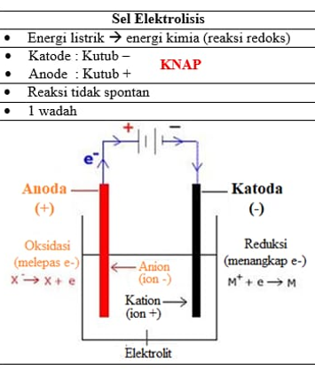

Sel elektrolisis adalah perangkat yang digunakan untuk menjalankan reaksi kimia melalui aplikasi energi listrik. Reaksi ini disebut elektrolisis dan bertujuan untuk mengubah energi listrik menjadi energi kimia.
Pada sel elektrolisis, katoda memiliki muatan negatif sedangkan anoda memiliki muatan positif. Sesuai dengan prinsip kerja arus listrik. Terdiri dari zat yang dapat mengalami proses ionisasi, elektroda, dan sumber listrik (baterai). Listrik dialirkan dari kutub negatif dari baterai ke katoda yang bermuatan negatif. Larutan akan mengalami ionisasi menjadi kation dan anion. Kation di katoda akan mengalami reduksi sedangkan di anoda akan mengalami oksidasi.
Proses elektrolisis biasanya digunakan untuk menguraikan senyawa menjadi unsur-unsur penyusunnya atau untuk melakukan proses pelapisan logam.
Hukum Faraday menjelaskan hubungan antara jumlah zat yang dihasilkan atau diuraikan di elektroda selama elektrolisis dengan jumlah listrik yang digunakan dalam proses tersebut. Hukum Faraday terdiri dari dua hukum utama:
Hukum Faraday I menyatakan bahwa massa zat yang dihasilkan atau diuraikan di elektroda selama elektrolisis sebanding dengan jumlah muatan listrik yang mengalir melalui larutan elektrolit.
m = k ⋅ Q
di mana:
m adalah massa zat yang dihasilkan atau diuraikan (dalam gram),
Q adalah muatan listrik total yang mengalir (dalam coulomb),
k adalah konstanta yang disebut ekivalen elektrokimia dari zat tersebut.
Hukum Faraday II menyatakan bahwa massa zat yang dihasilkan atau diuraikan oleh jumlah muatan listrik yang sama sebanding dengan ekivalen kimia dari zat tersebut.
m = (Q / F) × (M / n)
di mana:
m adalah massa zat yang dihasilkan atau diuraikan (dalam gram),
Q adalah muatan listrik total yang mengalir (dalam coulomb),
F adalah Konstanta Faraday (sekitar 96485 coulomb per mol elektron),
M adalah massa molar dari zat (dalam gram per mol),
n adalah jumlah elektron yang terlibat dalam reaksi per mol zat.
Hukum Faraday sangat penting dalam desain dan operasi sel elektrolisis karena membantu dalam menghitung jumlah zat yang akan dihasilkan atau diuraikan berdasarkan arus listrik yang diterapkan. Dalam praktiknya, ini berarti bahwa dengan mengetahui arus listrik dan waktu elektrolisis, seseorang dapat menghitung berapa banyak produk yang akan dihasilkan atau berapa banyak zat yang akan diuraikan di elektroda.
Dalam konteks sel elektrolisis, elektroda dapat diklasifikasikan menjadi dua jenis utama berdasarkan reaktivitasnya selama proses elektrolisis:
Elektroda inert adalah elektroda yang tidak bereaksi secara kimia dengan larutan elektrolit atau produk elektrolisis. Elektroda ini hanya berfungsi sebagai konduktor arus listrik dan tidak berpartisipasi dalam reaksi kimia yang terjadi di sel elektrolisis. Contoh umum elektroda inert adalah platinum (Pt) dan grafit (C).
Contoh penggunaan:
Elektroda aktif adalah elektroda yang dapat bereaksi dengan larutan elektrolit atau produk elektrolisis. Elektroda ini tidak hanya berfungsi sebagai konduktor arus listrik tetapi juga terlibat dalam reaksi kimia yang terjadi di sel elektrolisis. Elektroda aktif seringkali larut atau mengalami perubahan massa selama proses elektrolisis. Contoh umum elektroda aktif adalah tembaga (Cu) dan perak (Ag).
Contoh penggunaan:
Sel elektrolis terdiri dari elektroda yang terjadi pada reaksi elektroda dan bergantung pada potensial oksidasi / reduksi standar.
Pada sel elektrolis, elektroda terdiri dari dua komponen utama:
Reaksi elektroda pada sel elektrolisis bergantung pada beberapa faktor kunci: